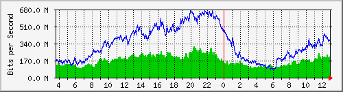
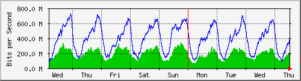
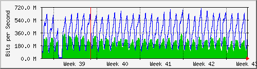
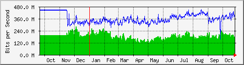

Traffic Analysis for Gi1/0/9 -- ISP-border.sky
| System: | ISP-border.sky in Stoika |
| Maintainer: | falcon@skyinet.org |
| Description: | GigabitEthernet1/0/9 link2spider |
| ifType: | ethernetCsmacd (6) |
| ifName: | Gi1/0/9 |
| Max Speed: | 1000.0 Mbits/s |
| Ip: | No Ip (No DNS name) |
The statistics were last updated Thursday, 26 October 2017 at 12:55,
at which time 'ISP-border.sky' had been up for 8 days, 10:32:46.
`Daily' Graph (5 Minute Average)

|
Max |
Average |
Current |
| In |
308.6 Mb/s (30.9%) |
168.3 Mb/s (16.8%) |
191.7 Mb/s (19.2%) |
| Out |
669.4 Mb/s (66.9%) |
340.4 Mb/s (34.0%) |
376.1 Mb/s (37.6%) |
`Weekly' Graph (30 Minute Average)

|
Max |
Average |
Current |
| In |
336.3 Mb/s (33.6%) |
185.7 Mb/s (18.6%) |
198.4 Mb/s (19.8%) |
| Out |
727.7 Mb/s (72.8%) |
390.9 Mb/s (39.1%) |
409.0 Mb/s (40.9%) |
`Monthly' Graph (2 Hour Average)

|
Max |
Average |
Current |
| In |
343.1 Mb/s (34.3%) |
194.5 Mb/s (19.4%) |
163.2 Mb/s (16.3%) |
| Out |
692.7 Mb/s (69.3%) |
369.1 Mb/s (36.9%) |
298.2 Mb/s (29.8%) |
`Yearly' Graph (1 Day Average)

|
Max |
Average |
Current |
| In |
278.8 Mb/s (27.9%) |
184.4 Mb/s (18.4%) |
179.4 Mb/s (17.9%) |
| Out |
450.5 Mb/s (45.0%) |
362.5 Mb/s (36.3%) |
383.2 Mb/s (38.3%) |
| GREEN ### |
Incoming Traffic in Bits per Second |
| BLUE ### |
Outgoing Traffic in Bits per Second |